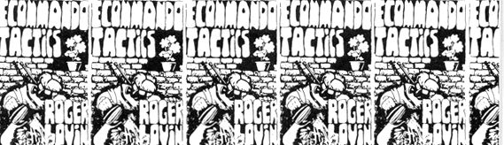

A couple of weeks ago I got a letter from a reader of my column, ECOMMANDO TACTICS, which appears in the L.A. FREE PRESS. The reader-George Tucker-wrote, in part, thus:
During the past eight months I have quite frequently ridden my motorcycle on the Pomona Freeway from L.A. to Pomona and back. Very early it struck me that I lost power at the intersection with the 605 Freeway, so much so that I usually pulled over to the right hand lane, minimized wind resistance and hoped for the best. During most of this time I knew the engine wasn't working properly but I thought that it had just reached a point of warming up at that place, thereby causing some reaction . . . and that perhaps I was hitting a headwind coming from Pomona.
Then I removed the instruction manual from its position blocking the air intake and made a few more trips. Now the machine functions beautifully on both sides of the intersection but still loses most of its power at the same place.
I couldn't understand it at all until last weekend. Then-in the midst of reading the Nader Task Force report, Vanishing Air -I made a trip to Pomona after running a few errands in L.A. and definitely getting the cycle well worked into the groove and running smoothly.
Coming back, I took the San Bernardino Freeway, which is more crowded and more polluted than the Pomona and the machine developed even less power! When traffic got particularly heavy I actually had to gear down!
Right! Who says machines are dumb? They have more sense than humans when it comes to pollutin'; when things get too bad they just stop running! No wonder new cars need more horsepower than old ones: they have to compete harder for oxygen, just like you and me.
I suggest that all your readers take notice of these effects next time they travel the freeways; it's easier than looking at a piece of lung tissue.
By the way, can you recommend a good gas mask?
Well, the more I thought about George's letter, the less ridiculous it sounded. But my inate scepticism wouldn't let me take it at face value. Accordingly, I booted and helmeted, fired up the trusty Honda and tooled on down to Pomona. I made runs on that freeway: one during the evening rush and another about eleven-thirty at night.
And damned if George isn't right. I DID lose power during the heavy-pollution times. And the loss was greater in high-concentration areas (overpasses, stall points, feeder sections, etc.) than in low.
I came home and thought about it. Could other factors be involved? Was air pollution itself actually responsible for my power loss? What were the possibilities of the loss being caused by the bike itself, or by some unnoticed physical factor . . . a very slight uphill grade, for example, too small to notice by eye yet with an accumulative inertia sufficient to slow my motorcycle's engine?
Pondering all this, I soon realized that my mind was in deeper than my training could back up. So I picked up the phone and hollered for help.
Help came in the form of a couple of friends who are measure-and-analysis freaks from the University of California at Irvine. They wired me and the bike with various nefarious devices and we made for the concrete cowpaths once more. Then, looking vaguely martian, trailing sundry wires and connections and followed by a pickup full of recording equipment I took off down the road.
Surprise! No significant power loss due to air pollution! Then we tried it again on Monday. In the traffic.
Engine performance down TWENTY-ONE PERCENT Carburetor efficiency down almost forty percent. Estimated engine-life loss: twenty percent over a one-year period.
Well, it's bad enough to think that my loyal two-wheeler is going to die before I can afford to convert it to steam. It's even worse to think of the increased pollution it emits due to bum carburetion. But it is infinitely worse yet to realize that I can replace the bike, BUT NOT MY LUNGS!
Like other forms of lung pollution, smog is tolerated because we all think that we'll get out of the city before it gets us . . . or that the government or Ralph Nader will clean things up in time. But it ain't so. Every breath you take in this atmosphere shortens your life by a couple of breaths.
It's like that great American institution, the time payment; you feel as though you're getting away with something because the bill doesn't come due till later, and it comes in small, painless bites . . . but in the end you find that you've paid for your fun twice over.
And Brothers and Sisters, the bill ALWAYS comes. There's no way to dodge it. The collection agency here is that dude with the scythe, and he never misses. NEVER. In the case of lung pollution, time is the coin, and time is the price. You pay for ruined lungs in life itself.
Now, what are we going to do about it?
|
 |
|
|